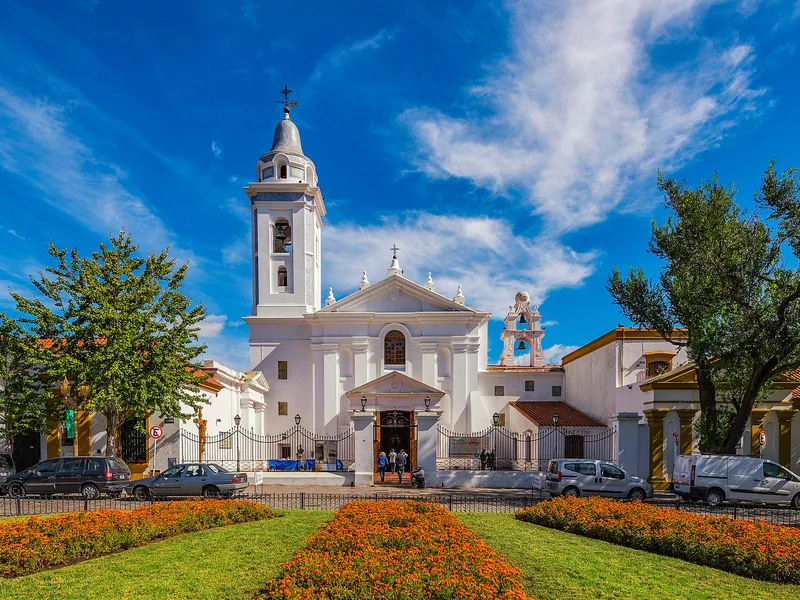
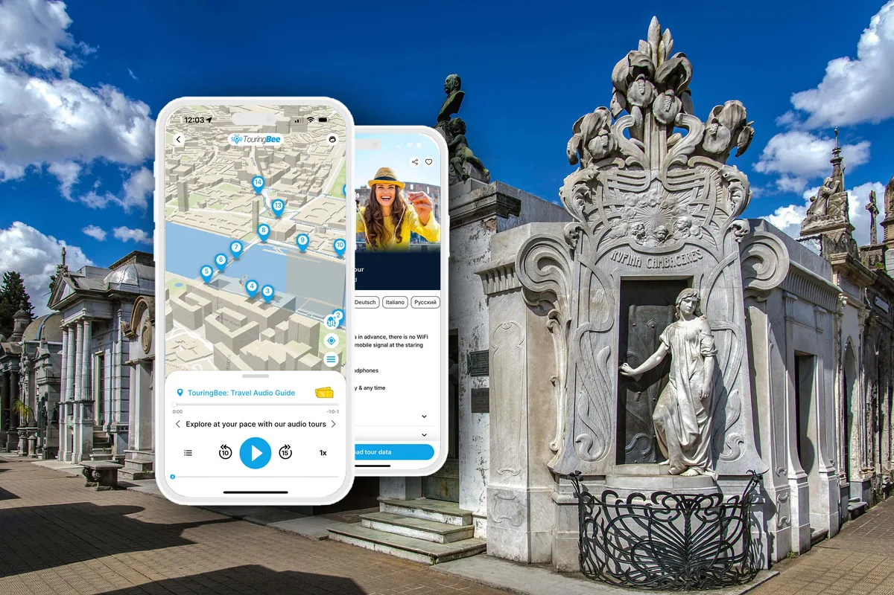

Реколета — это район, который Буэнос-Айрес построил в 1880-х, когда решил стать похожим на Париж. Особняки с мансардными крышами, бульвар под названием Альвеар, посольства во дворцах, кафе под фикусом старше самой республики — и в центре всего этого кладбище, одна из главных достопримечательностей Буэнос-Айреса. Многие приезжают в район только ради него и сразу уезжают. Зря: почти всё интересное в Реколете находится в десяти минутах ходьбы от его ворот.
В этом гайде — то, что в районе действительно стоит вашего времени, с часами работы и ценами на 2026 год, картой и двумя планами на полдня в конце — для будней и для выходных, потому что ярмарка и расписание культурного центра делают эти дни разными. Начните с кладбища: TouringBee соединяет 22 самых интересных склепа в готовый маршрут примерно на полтора часа. Офлайн-карта ведёт от одного к другому, а истории запускаются прямо у могил — без группы и расписания.
Впервые идёте на кладбище? Сначала откройте наш полный гид: билеты, вход, могила Эвиты и практические советы. А здесь — что посмотреть вокруг.
Реколета: главное
Купить аудиогид →
1. Кладбище Реколета
Причина, по которой район вообще есть на туристических картах: 4 600 склепов на пяти с половиной гектарах, разбитых на улицы и кварталы, где лежат президенты, генералы, нобелевские лауреаты, чемпион по боксу и Эва Перон. Открыто с 9:00 до 17:00 каждый день; нерезиденты платят за вход, жители Аргентины проходят бесплатно. Путешественники, которые снимали и описывали свои визиты, сходятся в одном: первый час после открытия обычно самый спокойный, поэтому приходите к 9:00 и отведите полтора часа. Всё необходимое — билеты, как найти Эвиту, кто где похоронен — есть на этом сайте; истории у самих склепов — в аудиогиде.

2. Базилика Нуэстра-Сеньора-дель-Пилар
Прямо у ворот кладбища, белая, невысокая и снаружи совсем простая — и при этом одна из старейших церквей Буэнос-Айреса: францисканцы-реколеты достроили её в 1732 году, когда здесь были сады на окраине города. Сюрприз ждёт внутри: колониальные алтари, главный алтарь с серебряной облицовкой и тишина, какой больше нет ни в одном углу квартала. Вход в церковь бесплатный; одевайтесь, как в любой действующий храм. В бывших монастырских помещениях за ней — Museo de los Claustros, маленький музей колониального быта монахов, платный и с меняющимся расписанием: проверьте перед тем, как строить вокруг него планы. Почему в 1863 году церковь потеряла контроль над кладбищем — из-за похорон масона, — одна из остановок аудиомаршрута.
3. Культурный центр Реколета
Вторая половина того же монастыря — потом госпиталь, богадельня и казармы, — которую в 1980 году архитектор Клориндо Теста превратил в центр современного искусства с плотной программой: выставки, фотография, инсталляции, бесплатные концерты и события. С террас открывается редкий бесплатный вид сверху на крыши склепов и купол базилики — путешественники часто называют его главной причиной зайти внутрь. Junín 1930; вторник–пятница 13:30–22:00, выходные и праздники 11:30–22:00, понедельник закрыт. По зданию можно гулять бесплатно; отдельные выставки берут с нерезидентов небольшую плату.
4. Площадь Франции и ярмарка выходного дня
Лужайки, спускающиеся от кладбищенской стены к авениде Либертадор, — это две площади с тремя именами: Plaza Francia, Plaza Intendente Alvear и — для всех жителей Буэнос-Айреса — просто «ла Реколета». По субботам, воскресеньям и праздникам, примерно с 11:00 до 20:00, их заполняет Feria de Plaza Francia: лотки с кожей, серебром, керамикой, калебасами для мате и вязаными вещами. Это официальная feria artesanal: по правилам всё должно быть сделано руками того, кто продаёт, так что привозного сувенирного ширпотреба здесь нет. Уличные музыканты, компании с мате на траве, собачники с дюжиной поводков. В будни без ярмарки площадь заметно спокойнее: местные сидят на лужайках, читают и пьют мате.
5. La Biela и гомеро
Наверху площади, напротив ворот кладбища, терраса кафе La Biela стоит под Гран-Гомеро — каучуковым фикусом, которому, по всем источникам, больше двухсот лет (город относит его к концу XVIII века и охраняет как историческое дерево); его горизонтальные ветви длиной до 30 метров подпёрты стальными костылями и накрывают тенью половину террасы. С 1950-х это кафе — гостиная района: тогда его штаб-квартирой сделали автогонщики (biela — это шатун), и двое из них, включая Фанхио, сидят у входа, отлитые из стеклопластика. Кофе дорогой, за террасу берут надбавку. Заплатите. Это место для кофе в 8:45, перед открытием кладбища, и место, где прийти в себя после.

Слушайте истории прямо у склепов
22 остановки · ~1,5 часа · офлайн-карта — от €9.99, одна оплата, без подписки.
Скачать аудиогид6. Национальный музей изящных искусств
Через авениду Либертадор, в пяти минутах от кладбища, главный художественный музей страны — и он бесплатный. Европейская коллекция сильна импрессионизмом и XIX веком (Мане, Моне, Дега, Роден, Ван Гог), плюс полный обзор аргентинского искусства. Av. del Libertador 1473; вторник–пятница 11:00–20:00, суббота и воскресенье 10:00–20:00, понедельник закрыт. Закладывайте час. Если времени мало, идите в аргентинские залы на втором этаже: от искусства XIX века и образов гаучо до Антонио Берни и Ксуля Солара.
7. Floralis Genérica
Ещё пять минут по Либертадору — около десяти от кладбища, — на площади Объединённых Наций, — двадцатиметровый цветок из нержавеющей стали и алюминия. В нормальном режиме он каждое утро около 8:00 раскрывает шесть лепестков, а на закате складывает их, как настоящий; в некоторые национальные праздники остаётся раскрытым всю ночь. Архитектор Эдуардо Каталано подарил его городу в 2002 году. Механизм не раз ремонтировали — последний раз после того, как шторм в конце 2023 года сорвал лепестки, — поэтому положение лепестков может отличаться от расписания. Лучше всего снимать утром с раскрытыми лепестками или в сумерках, когда они закрываются и внутри загорается красный свет. Бесплатно, всегда.
8. Авенида Альвеар и Belle Époque
Семь кварталов того Буэнос-Айреса, который называл себя южноамериканским Парижем: дворец Дуау (сегодня Park Hyatt с садовым кафе, куда пускают всех), отель Alvear Palace, Жокей-клуб, папская нунциатура в бывшем дворце Фернандес-Анчорена и доходные дома между ними — все до одного с французскими крышами. Это отдельная прогулка, а не часть кладбищенского круга: если продолжаете после обеда, дойдите до площади Карлоса Пеллегрини и возвращайтесь к кладбищу по Альвеар — в этом направлении фасады складываются лучше всего. Это единственная улица, где сравнение с Парижем не звучит как реклама.
9. El Ateneo Grand Splendid
Формально уже за границей района, на авениде Санта-Фе, и в пятнадцати минутах пешком от кладбища, но во всех списках по Реколете — и не зря: театр 1919 года с ложами, расписным куполом и красным занавесом, превращённый в 2000 году в книжный. На сцене — кафе. В ложах — читальные уголки. Вход бесплатный, и никто не против, если вы ничего не купите; это естественный финал дня и место, где взять «Мартина Фьерро» Хосе Эрнандеса или Биоя Касареса после того, как вы увидели их могилы.
Ещё в районе
- Факультет права (Facultad de Derecho) — греческий храм юридического факультета напротив Floralis; станция линии H «Facultad de Derecho» — ближайшая к цветку.
- Palais de Glace — каток 1910 года, ставший выставочным залом, на улице Посадас; стоит заглянуть, если идёт выставка.
- Национальный музей декоративного искусства — дворец 1911 года на Либертадоре с подлинными интерьерами, чуть дальше Музея изящных искусств.
- Recoleta Mall (Vicente López 2050, за кладбищем) — ради банкомата, туалета или холодного напитка. Бывший Buenos Aires Design рядом с Культурным центром перестраивают в торговый центр под открытым небом «OH! Buenos Aires»; открытие несколько раз переносили — проверьте, прежде чем на него рассчитывать.
Где поесть
La Biela — ради террасы, не ради еды. За нормальным обедом — на улицы за кладбищем: Vicente López, Azcuénaga, Junín, где парильи и старые кафе района; ресторанный ряд на R.M. Ortiz у ярмарки удобен, по-туристически дорог и вполне годится для пива под деревьями. Мороженое — отдельная группа продуктов в Реколете: кажется, heladería тут на каждом втором углу, и заказывать нужно дульсе-де-лече.
Экскурсии и билеты
Кладбище — то место в Реколете, где исторический контекст особенно важен: без него легко увидеть десятки красивых склепов и не понять, чьи истории за ними стоят. Маршрут TouringBee — вариант для самостоятельной прогулки; если хочется задавать вопросы живому гиду, прогулки в небольших группах на английском стартуют несколько раз в день, и в большинство входит билет для нерезидентов. Отсюда удобно перейти и к другим популярным впечатлениям Буэнос-Айреса — танго-ужинам, обзорным турам, поездкам в дельту Тигре и Колонию, — а сравнивать их проще всего на GetYourGuide.
Реколета и Буэнос-Айрес — экскурсии и впечатления
Прогулки по кладбищу на английском · танго-шоу · дельта Тигре · Колония-дель-Сакраменто
Бронирование через нашего партнёра GetYourGuide. Цена та же, что напрямую; мы можем получить небольшую комиссию.
Где остановиться
Реколета популярна как база благодаря центральному расположению, большому выбору отелей и тому, что почти всюду можно дойти пешком — в том числе за пять минут до кладбища и площади Франции. Отели на авениде Альвеар и вокруг — гранд-класса; улицы в сторону Баррио-Норте — средний сегмент. Палермо, район к северу, живее и дешевле, и до него недалеко на такси. Как и в других центральных районах Буэнос-Айреса, следите за телефоном и сумкой в людных местах. Посмотреть отели в Реколете на Booking.com →
Два плана на полдня
Ярмарка работает только по выходным, а Культурный центр в будни открывается в 13:30, поэтому день складывается по-разному в зависимости от того, когда вы приехали.
Будний день
- 8:45 — Кофе на террасе La Biela под гомеро. Билет на кладбище уже куплен на Entradas BA; аудиогид скачан по Wi-Fi в отеле.
- 9:00–10:30 — Кладбище с маршрутом из 22 остановок: раннее утро обычно спокойнее середины дня.
- 10:30–10:50 — Базилика Пилар рядом.
- 11:00–12:00 — Вниз через площадь Франции и через Либертадор в Музей изящных искусств (открывается в 11:00).
- 12:10 — Десять минут по Либертадору до Floralis Genérica.
- 13:00 — Обед у факультета права или снова за кладбищем.
- С 13:30, по желанию — Культурный центр Реколета (как раз открылся) ради вида с террасы; дальше авенида Альвеар и El Ateneo.
Выходной или праздник
- 8:45 — Кофе в La Biela.
- 9:00–10:30 — Кладбище. Учтите: бесплатные испаноязычные экскурсии по выходным стартуют с 9:00, так что аллеи заполняются чуть раньше.
- 10:30–10:50 — Базилика Пилар.
- 11:00 — Ярмарка и площадь Франции, пока открываются лотки.
- 11:30 — Культурный центр Реколета (по выходным открывается в 11:30): терраса над крышами кладбища.
- 12:15 — Музей изящных искусств (работает с 10:00) или сразу к Floralis.
- 13:30 — Обед. После обеда, по желанию: авенида Альвеар, El Ateneo.
Аудиогид по кладбищу РеколетаМгновенный доступ
- Полностью офлайн — на кладбище не нужны ни Wi-Fi, ни мобильный интернет
- Офлайн-карта с маршрутом — каждую историю вы включаете сами, стоя у склепа
- Языки аудиогида: английский, испанский
- Работает на iOS и Android
- 22 остановки, примерно 1–2 часа в своём темпе
Главное
Реколета — не список, а кластер: кладбище, базилика, культурный центр и площадь в одном квартале; бесплатный национальный музей и стальной цветок в десяти минутах; южноамериканский Париж между ними. Идите пешком, начинайте в 9:00 и пусть кладбище задаст тон всему остальному.
А внутри кладбища аудиогид добавляет то, чего не даёт маршрут по району: истории у самих склепов, в логичном порядке и в вашем темпе. Купить аудиогид — 22 остановки · офлайн · €9.99
Частые вопросы
Чем известна Реколета?
Реколета — парадный район Буэнос-Айреса эпохи Belle Époque: кладбище, где похоронена Эва Перон, базилика Пилар XVIII века, бесплатный Национальный музей изящных искусств, особняки Belle Époque на авениде Альвеар и гигантский стальной цветок Floralis Genérica.
Стоит ли ехать в Реколету не только ради кладбища?
Да: кладбище, базилика, культурный центр, площадь Франции и Музей изящных искусств стоят в десяти минутах ходьбы друг от друга. Вместе это полноценные полдня без единого такси.
Национальный музей изящных искусств бесплатный?
Да, вход свободный. Вторник–пятница 11:00–20:00, суббота и воскресенье 10:00–20:00, понедельник закрыт. Av. del Libertador 1473.
Когда работает ярмарка в Реколете?
Feria de Plaza Francia (официально — на площади Intendente Alvear) работает по субботам, воскресеньям и праздникам, примерно с 11:00 до 20:00, прямо у кладбища.
Floralis Genérica до сих пор раскрывается и закрывается?
Да, в нормальном режиме: двадцатиметровый стальной цветок раскрывает лепестки около 8:00 и закрывает на закате. Механизм несколько раз ремонтировали (последний раз после шторма в конце 2023 года), поэтому лепестки могут быть зафиксированы в одном положении. От кладбища — десять минут пешком.
Сколько времени нужно на Реколету?
Полдня хватит на кладбище (90 минут), базилику (20 минут), Музей изящных искусств или культурный центр (час) и кофе в La Biela. Полный день добавит Floralis Genérica, авениду Альвеар и El Ateneo.
Реколета — хороший район, чтобы остановиться?
Это одна из самых популярных баз в Буэнос-Айресе: центр, всё пешком, большой выбор отелей от гранд-класса до среднего, пять минут до кладбища. Как в любом центральном районе, следите за телефоном и сумкой в толпе — особенно на ярмарке в выходные.
Читайте дальше
Часть ссылок на этой странице — партнёрские (GetYourGuide, Booking.com, TouringBee). Если вы бронируете по ним, мы получаем небольшую комиссию — для вас цена не меняется. На наши рекомендации это не влияет. Подробнее — в разделе О партнёрских ссылках.